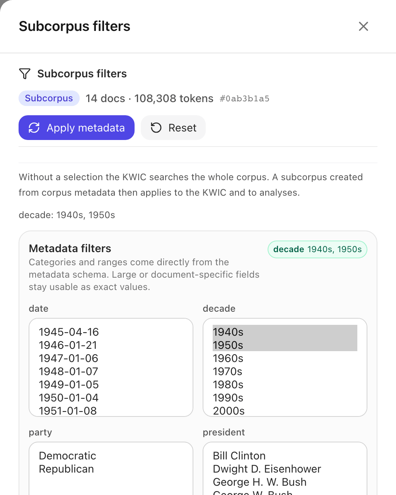
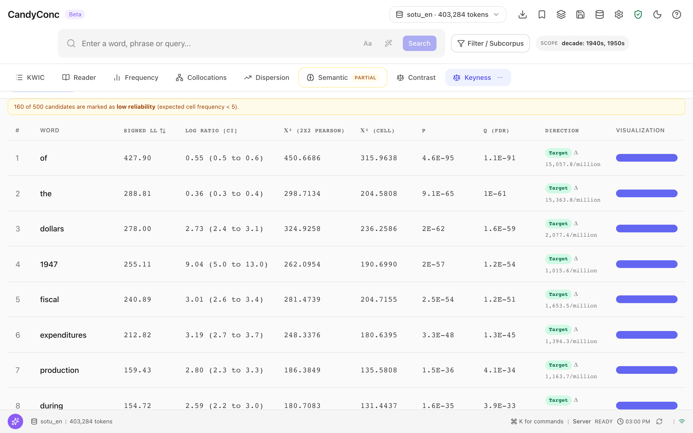

Tutorial: compare two periods#
This tutorial compares the vocabulary of the early addresses in the English sample corpus, from 1945 to 1959, with that of the later ones, from 1961 to 2006. You restrict the corpus to the early decades with a metadata filter, compute keyness against the rest of the corpus, read the columns of the result, and go back from a keyword to the concordance lines on both sides of the comparison.
Before you begin#
Complete First results, so that the sample corpus
sotu_enis imported with its metadata fielddecadeand CandyConc is running.Select sotu_en in the corpus selector in the top bar.
Step 1: Restrict the corpus to the early decades#
Click Filter / Subcorpus next to the search field.
The panel Subcorpus filters opens. Under Metadata filters it shows one list for each metadata field with the values of the corpus.
In the list decade, select 1940s, then hold Command (macOS) or Control (Linux) and select 1950s.
Click Apply metadata.
The panel shows Subcorpus 14 docs · 108,308 tokens, and next to the search field the scope label reads SCOPE decade: 1940s, 1950s. Every search and analysis now runs on these 14 addresses until you reset the filter.
Press Escape to close the panel.


The filter panel after Apply metadata. The size of the new scope stands at the top of the panel.#
Step 2: Compute keyness against the rest of the corpus#
Click More in the tab bar.
Choose Keyness.
The view shows Scope: Subcorpus · sotu_en, so the active filter is the target. Under REFERENCE, Rest of the whole corpus is selected, which here is the 51 addresses from the 1960s to the 2000s.
Click the button Keyness to compute the table.
CandyConc lists the words whose frequency differs most between the two sides, sorted by signed log-likelihood. The first rows are:
WORD |
SIGNED LL |
LOG RATIO [CI] |
DIRECTION |
|---|---|---|---|
of |
427.90 |
0.55 (0.5 to 0.6) |
Target |
the |
288.81 |
0.36 (0.3 to 0.4) |
Target |
dollars |
278.00 |
2.73 (2.4 to 3.1) |
Target |
1947 |
255.11 |
9.04 (5.0 to 13.0) |
Target |
fiscal |
240.89 |
3.01 (2.6 to 3.4) |
Target |
A note above the table reads 160 of 500 candidates are marked as low reliability (expected cell frequency < 5). For these words, an expected frequency in the contingency table is below 5, and the test statistic approximates the true distribution less well.


The first rows of the keyness table. dollars and fiscal, words of the budget messages, rank third and fifth.#
Step 3: Read the columns#
SIGNED LL is the log-likelihood statistic G² with the sign of the difference. A positive value means the word is relatively more frequent in the target. The table is sorted by this column. G² grows with the size of the difference and with the frequency of the word, which is why frequent function words such as of and the reach the top with small differences.
LOG RATIO [CI] is the binary logarithm of the ratio of the two relative frequencies, with its 95% confidence interval in parentheses. It measures the size of the difference: 2.73 for dollars means that the word is about \(2^{2.73}\), or 6.6 times, as frequent per million words in the early addresses as in the later ones. For 1947, which never occurs in the later addresses, the interval is wide.
P and Q (FDR) are the p-value and the p-value corrected for testing many words at once.
DIRECTION names the side on which the word is more frequent, with the difference in occurrences per million word tokens, for example TargetΔ 2,077.4/million for dollars.
Several top words point to the budget messages of the Truman and Eisenhower years: dollars, fiscal, expenditures. The years 1945 to 1947 are keywords because the early addresses name them. Keyness measures a difference in frequency. Why a word differs is a question for the lines. See Keyness for the formulas and the definition of the word tokens that the rates divide by.
Step 4: Go back to the lines on the target side#
The target frequency of a keyword is the number of hits of the word in the target. The filter from step 1 is still active.
Click the tab KWIC.
In the search field, enter
dollars.Press Enter.
The concordance shows 236 hits in the 14 early addresses. Scroll through the lines: many of them state amounts of a budget, such as estimated receipts and expenditures in billions of dollars.
Step 5: Go back to the lines on the reference side#
Click Filter / Subcorpus.
Click Reset at the top of the panel.
In the list decade, select 1960s and, holding Command or Control, also 1970s, 1980s, 1990s, and 2000s.
Click Apply metadata. The panel shows Subcorpus 51 docs · 294,976 tokens.
Press Escape to close the panel.
Click in the search field.
Press Enter to run
dollarsagain.
The concordance shows 95 hits. The two counts, 236 and 95, are the frequencies that the keyness row for dollars compares. The target has 108,308 tokens and the reference 294,976, which is why keyness compares rates and not the raw counts. The rates divide by the word tokens of each side, 96,498 and 258,007: 236 / 96,498 · 10⁶ = 2,445.6 and 95 / 258,007 · 10⁶ = 368.2 per million. Their difference, 2,077.4, is the value in the column DIRECTION.
Step 6: Return to the whole corpus#
Click Filter / Subcorpus.
Click Reset.
Press Escape to close the panel.
The scope label shows the whole corpus again, and dollars has
331 hits, the sum of both sides.
What you have compared#
The keyness table compares two disjoint parts of one corpus, defined by the
metadata field decade: 14 addresses with 108,308 tokens against 51
addresses with 294,976 tokens. Each keyword row rests on two raw counts that
you can open as concordance lines, as you did for dollars. The statistics
in the row are derived from these counts and the word tokens of the two sides.
Next steps#
The same steps compare groups instead of periods. Select a value of the field
partyin step 1, for example Republican, to compare Republican addresses with the rest.Compare the collocations of a word between two subcorpora: Contrast collocations and paired versions.
Save a scope under a name to reuse it: Create and reuse subcorpora.
How scope enters every number: Scope, subcorpora, and document sets.